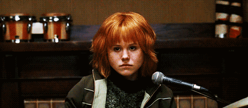
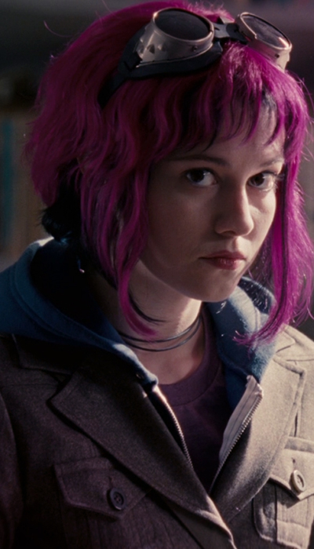
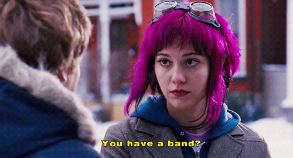
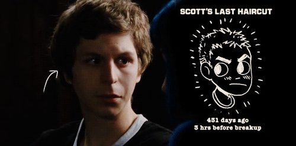
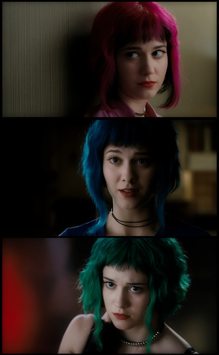

Considerações Iniciais
Bom, diferente dos outros textos, esse não terá os spoilers indicados no final. Eles estarão no meio do texto mesmo. Isso porque nenhuma linha desse texto é de minha autoria, e sim de autoria do canal "Elegante", um canal focado em cinema com mais de 370 mil inscritos que me cedeu o texto usado no vídeo de análise do filme "Scott Pilgrim", o tal vídeo é encontrado no final do texto, pra quem não gosta muito de ler.
Início

Scott Pilgrim é um garoto de 23 anos que mora com seu amigo gay, Wallace e tem uma banda de rock chamada Sex Bob-Omb. O filme inicia com Scott em seu começo de namoro com Knives Chau, uma garota chinesa de 17 anos – cinco anos mais nova do que ele. O relacionamento parece promissor, apesar das adversidades. O protagonista quer provar para si mesmo que está feliz e, aparentemente, não se importa com o fato de ainda não pegar na mão da sua namorada.
Scott era uma cara que se contentava com a vida comum que levava. Ele não tinha perspectiva de emprego ou muitas ambições, além de não ligar para o fato de sua banda não ter futuro. Porém, tudo muda quando ele sonha com Ramona Flowers, uma garota que ele nem conhecia e até então, não sabia se era real.
O encontro
Sua dúvida é sanado quando Scott e sua banda vão em uma festa na expectativa de conhecer algum produtor musical, e encontram justamente, Ramona. O personagem principal deseja saber tudo sobre ela, e não consegue tirar da cabeça que ela é de fato, a garota de seus sonhos, em todos os sentidos.
A partir desse momento, o protagonista perde total interesse em ficar com Knives, mas mesmo assim, não termina o relacionamento. Aliás, esse é um traço recorrente dos personagens do filme. Não exatamente a traição, mas os problemas comuns de um namoro adolescente e pós adolescente: os conflitos e a maturidade para lidar com eles.
Eventualmente, Scott descobre, que para ter um romance com Ramona, precisa derrotar os seus sete ex “namorados do mal”. Assim, como em um conceito clássico e simples de jogos eletrônicos (e o filme faz questão de atribuir uma estética característica de videogames), para ficar com a princesa, o personagem principal precisa passar por determinadas fases, ganhar pontos, vencer os chefes de cada nível e evoluir à medida que avança para se tornar digno de seu prêmio.
O passado amoroso de Ramona é conturbado, tanto que ela havia se mudado de cidade para fugir das recordações e consequências de seus relacionamentos anteriores. Ela resiste às investidas desengonçadas de Scott, mas como o personagem estava disposto, ela reconhece suas intenções. Porém, para conseguir a chance de namorá-la, o protagonista luta contra as cicatrizes de tantos namoros que não deram certo, não só para mostrar seu entusiasmo por Ramona, como para provar para si mesmo, que era capaz de ser corajoso, valente e, encantador – apesar das opiniões contrárias.
Adolescência
Na adolescência, é comum que namoros, ou não tenham um rompimento legal, ou não durem bastante. É uma fase de iniciação, de experiência, onde não há certeza de nada, apenas vontades. Ainda não alcançamos a maturidade e conhecimento suficiente para compreender como se portar em uma relação a dois. Isso não é regra, mas normalmente, quanto mais novo, mais difícil é manter o relacionamento. Por isso Scott Pilgrim não é, especificamente, sobre “amor”. No contexto do filme, talvez esse sentimento seja uma sombra que influencia, move e direciona os personagens, ao despertar desejos e atrações, contudo, que possivelmente, acaba sendo confundido com algo passageiro e fútil.
À medida que entendemos que o amor não é algo fácil de se sentir ou preservar, passamos a ter um pouco mais de equilíbrio sobre nossos desejos e valorizar mais momentos únicos, além de se tornar mais difícil esquecer aqueles que fizeram a diferença em nossas vidas. Pois os laços com pessoas que amamos não vão embora; permanecem como marcas em nossa pele, cicatrizes que volta e meia, precisamos lidar para não se tornarem um tormento. Em outras palavras, devemos escolher se vamos aprender com os erros, ou tentar empurrá-los para debaixo do tapete. A primeira opção, obviamente é mais recomendada, uma vez que, a cada relacionamento frustrado, ganhamos experiências que vão, gradativamente, nos moldar para que as próximas relações, sejam melhores do que as anteriores. Mas nem todo mundo consegue superar um namoro, que em sua visão, foi “perfeito” ou merecia uma “segunda chance”.
Contrastes
Assim como Ramona, Scott teve relacionamentos, que lhe deixaram marcas em sua vida (e até alguns traumas). Após o término conturbado com Natalie, por exemplo, o personagem recém havia cortado o cabelo, e depois do ocorrido, nunca mais foi em um salão. Desde então ele mesmo cortava em casa. Claro que superficialmente, trata-se de uma consequência boba, mas para fins narrativos, exemplifica o poder que um término tem em nossas vidas. Percebemos o desespero do personagem quando lhe dizem que seu cabelo estava ficando desgrenhado, indicando que ele deveria ir a um salão. Nesses casos, eles preferia colocar um gorro a fim de não ter que enfrentar seu “trauma”.

Isso gera um contraste com a personalidade de Ramona, que mudava a cor do seu cabelo constantemente sem se importar, algo que chamava a atenção de Scott. Mas ela era assim, impulsiva e só pensava no agora, no momento em que estava vivendo, enquanto o protagonista remoia e sofria com seu passado.
Amor próprio
No confronto final com Gideon, Scott afirma, que queria lutar contra ele, por Ramona, mas é morto no combate. Porém, ele consegue mais uma vida (assim como em um videogame), e com isso, a chance de tentar mais uma vez. Desta forma, ao ser questionado novamente, se desejava lutar por Ramona, Pilgrim responde que não, pois agora ele queria lutar por si mesmo. Isto é, Scott percebe que deveria se valorizar também, acreditar em si mesmo e pensar um pouco mais no próprio bem-estar, pois somente desse modo, seria capaz de derrotar Gideon..
Mas ao atingir esse objetivo, um novo inimigo aparece: O Nega Scott, a versão negativa, mas não, necessariamente “do mal” de Scott Pilgrim. O protagonista não era a exata definição de “cara legal”, muito menos de “herói”. Ele era apenas um cara normal, e por isso, sua imagem invertida não é exageradamente diferente. Contudo, enfrentar a si mesmo pode ser a luta mais difícil de nossas vidas, pois na maioria das vezes, não queremos ir de encontro às nossas vontades, corrigir nossos defeitos ou simplesmente encarar nossas falhas.
No começo do filme, Scott não sabia como derrotar o seu eu negativo no vídeo game, mostrando que muitas vezes precisamos errar, lutar batalhas desnecessárias e desgastantes para só então, aprendermos o atalho para a resolução do conflito: uma simples conversa. Um confronto, físico ou não, pode deixar marcas e feridas que vão nos atormentar por muito tempo. Mas o diálogo é capaz de resolver um problema sem que nenhuma das partes saia machucada. Quando Scott é bem sucedido nessa auto reflexão, ele finalmente reconhece e aceita suas próprias falhas e feridas. Em outras palavras, ele 'vence', fazendo as pazes consigo mesmo.
Fim
A luta do protagonista contra o seu “eu negativo”, primeiro no vídeo game, e depois na vida real, exemplifica com precisão a proposta do filme, ao inserir elementos de um jogo dentro da narrativa real do longa. Pois “Scott Pilgrim contra o Mundo” funciona como uma espécie de comédia romântica cartoonizada, com certa dose de ação e piadas gráficas. Ao mesmo tempo em que as batalhas musicais são como um jogo eletrônico que simula a performance de um instrumento musical, a montagem e os enquadramentos nos dão a sensação de que esta é uma história em quadrinhos que ganhou vida nas telas.
Quando Scott revela a Knives e Ramona, que havia namorado as duas ao mesmo tempo, ele percebe que poderia perder ambas, até mesmo a segunda, a qual ele não considerava ter traído, visto que com ela, tinha começado o relacionamento mais tarde. Em contrapartida, Knives achava que Ramona havia roubado Scott, quando na verdade foi ele quem sabotou suas duas relações paralelas.
No fim, Ramona decide que precisa ir embora, pois não conseguiria escapar de seu passado e desejava evitar machucar mais pessoas ao seu redor, incluindo Knives. Esta, que abre mão de ficar com Scott, primeiro por ser muito legal para ele, e segundo, devido ao seu esforço para ficar com Ramona. Assim, o casal escolhe partir e, agora eles possuiam algo a mais em comum: o ímpeto de deixar o passado recente e desastroso em relacionamentos para trás, afim de começar um novo e promissor juntos.
VÍDEO ORIGINAL
Abaixo está o vídeo que deu origem a esse texto. Lembrando que o vídeo e texto pertencem ao canal "Elegante", deem like lá porque eu editei o vídeo. E sim, o fato dos subtítulos no começo estarem em rosa, na metade estarem em azul e no final estarem em verde representam a mudança de cores do cabelo da Ramona. É isso...Adios.